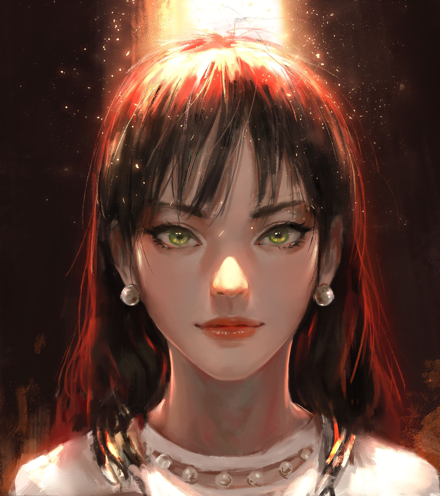

Jinming Zhang is a theatre designer and character stylist.
She graduated with an MA in Theatre Design from the University of the Arts London
She got her bachelor’s degree in theatre and performance design from the top-ranked drama school the Central Academy of Drama in China.
She has been involved in designing many stage productions and has extensive practical experience.

Jinming's daily hobbies are reading, painting, travelling and cooking.
Contact Jinming for more info.